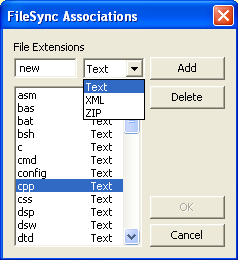
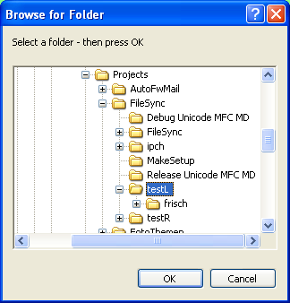
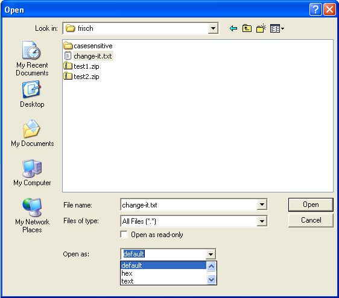
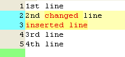
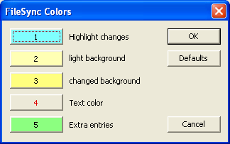

FileSync Contents
4.1 Open Files and Directories
4.1.1 File Type Associations to prepared views
FileSync is a utility for comparing and synchronizing directories and files. There is a Dir View and some different file views provided.
Several file views are provided to compare and synchronize two files.
Some default file extensions are assigned to the prepared views. Updating to a new version is performed by just installing the new version. In this case the stored settings are not changed.
The following controls are prepared for opening files and directories for the left and the right side of each view. The default view depends on the configured associations for file extensions.
To modifiy the file extension associations to a view go to menu View / Associations that opens the following dialog:

All undefined extensions are shown using HexView.
To show a directory in the Dir View there are several options to open it for the left or the right side:

Select the folder to be opened and press OK.
To show a single file or a pair of files in one of the provided views there are several options to open it for the left or the right side:

Select the file to be opened. Optionally select a specific view instead of default. Press Open to open the file.
To select the source side for synchronisation operations you may:
The ComboBox for the current side is highlighted.
Here is the default color schema:

| Color | Meaning |
|---|---|
| White | Equal lines |
| Magenta/Yellow/Red | Line and Char Differences |
| Green | Extra lines |
For the DirView there is a slightly different meaning of the colors.
Menu View / Colors opens the following dialog for changing the colors:

When the following command line parameters are given, the program will start with a suitable view, normally a file view. In this case the stored window position will not be used or updated.
Arg 1: Left file path
Arg 2: Right file path
Arg 3: (opt.) Left file title
Arg 4: (opt.) Right file title
Each argument must be quoted if containing spaces.
If one of the optional arguments is given, both files are set to local read only.
MKS Menu File / Edit Preferences
Preferences Configuration: Configuration Management / Diff and Merge Tools
Diff Tool Options: Custom Command:
C:\Program Files\Peter Pagel\FileSync\FileSync.exe "{3}" "{4}" "{1}" "{2}"